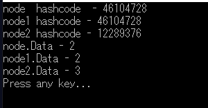
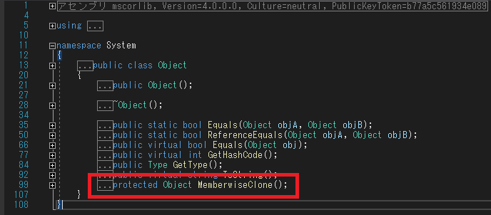
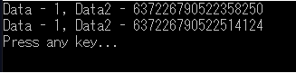
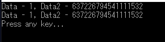

[C#] Reflectionを利用してクラス複製する方法
こんにちは。明月です。
この投稿はC#でReflectionを利用してクラス複製する方法に関する説明です。
OOPでクラス複製することはプロトタイプパターン(デザインパターン)によってクラスを複製する方法があります。
using System;
// テストのためのクラス
public class Node
{
// データ
public int Data { get; set; }
// クラス複製のためにObjectのMemberwiseCloneの関数を利用しなければならない。
public Node Clone()
{
// クラス複製
return this.MemberwiseClone() as Node;
}
}
class Program
{
// 実行関数
static void Main(string[] args)
{
// クラス宣言
Node node = new Node();
// これは複製ではなく、ポインター移動だけ。。
Node node1 = node;
// クラス複製
Node node2 = node.Clone();
// メモリハッシュコード
Console.WriteLine("node hashcode - " + node.GetHashCode());
// ポインター移動だけなので、nodeとnode1は同じクラスを指している。(同じヒープのクラスデータ)
Console.WriteLine("node1 hashcode - " + node1.GetHashCode());
// クラスが複製になったのでnodeとnode2は別のクラスだ。ヒープに指しているクラスが違う。
Console.WriteLine("node2 hashcode - " + node2.GetHashCode());
// nodeのDataに１を設定
node.Data = 1;
// node1のDataに１を設定
node1.Data = 2;
// node3のDataに3を設定
node2.Data = 3;
// コンソール出力
Console.WriteLine("node.Data - " + node.Data);
Console.WriteLine("node1.Data - " + node1.Data);
Console.WriteLine("node2.Data - " + node2.Data);
Console.WriteLine("Press any key...");
Console.ReadKey();
}
}

結果をみればnodeとnode1は同じクラスです。その意味はnodeでDataの値を修正したらnode1にも影響があると意味です。
でもnode2の場合は複製になったのでnodeと違うクラスです。その意味はnodeのDataの値が修正してもnode2は影響がないと意味です。
上の結果見ればnode.Dataが2になっていることを確認できます。
クラス複製をするようにはMemberwiseClone関数を利用すべきですが、MemberwiseClone関数はObjectクラスのprotectedタイプです。

その意味は私が作成するクラスつまり、MemberwiseClone関数を使うことができる状況なら複製ができますが、ライブラリのクラスや修正ができないクラスの場合はクラス複製ができないと意味になります。
その場合は新しくnewキーワードを使ってメモリ割り当てして変数の値を一々にコピーことしかないです。
でもこれも問題があるのはpublicの値は出来ますが、privateやprotectedはコピーが不可能なので、クラス複製ができないと意味になります。
using System;
// テストのためのクラス
public class Node
{
// データ
public int Data { get; set; }
public string Data2 { get; private set; }
// コンストラクタ
public Node()
{
// 現在時間のチック
Data2 = DateTime.Now.Ticks.ToString();
}
// コンソール出力関数
public void Print()
{
// コンソール出力
Console.WriteLine($"Data - {Data}, Data2 - {Data2}");
}
}
class Program
{
// 実行関数
static void Main(string[] args)
{
// Nodeを生成
Node node = new Node();
// node.Dataにデータを格納
node.Data = 1;
// nodeの値をコンソールに出力
node.Print();
// Nodeをコピーするようなクラス
Node node1 = new Node();
// node.Dataをコピー
node1.Data = node.Data;
// node1の値をコンソールに出力
node1.Print();
Console.WriteLine("Press any key...");
Console.ReadKey();
}
}

上の状況ならData2を設定する方法がないです。完全にコピーができないです。
それをReflectionを利用して解決ができます。
link - https://www.nowonbun.com/34.html
using System;
using System.Reflection;
// テストのためのクラス
public class Node
{
// データ
public int Data { get; set; }
public string Data2 { get; private set; }
// コンストラクタ
public Node()
{
// 現在時間のチック
Data2 = DateTime.Now.Ticks.ToString();
}
// コンソール出力関数
public void Print()
{
// コンソール出力
Console.WriteLine($"Data - {Data}, Data2 - {Data2}");
}
}
class Program
{
// クラス複製関数
static T CopyNode<T>(T node)
{
// パラメータのクラスクラスタイプ取得
Type type = node.GetType();
// クラス生成する。
T clone = (T)Activator.CreateInstance(type);
// クラス内部のすべての変数を取得する。
foreach (var field in type.GetFields(BindingFlags.Public | BindingFlags.NonPublic | BindingFlags.Instance))
{
// 変数がClassタイプなら再帰方法でクラスを複製する。ただ、Stringはクラスが構造体みたいに使うので例外
if (field.FieldType.IsClass && field.FieldType != typeof(String))
{
// 新しいクラスにデータを格納
field.SetValue(clone, CopyNode(field.GetValue(node)));
continue;
}
// 新しいクラスにデータを格納
field.SetValue(clone, field.GetValue(node));
}
return clone;
}
// 実行関数
static void Main(string[] args)
{
// Nodeを生成
Node node = new Node();
// node.Dataにデータを格納
node.Data = 1;
// nodeの値をコンソールに出力
node.Print();
// Nodeをコピーする。
Node node1 = CopyNode(node);
// node1の値をコンソールに出力
node1.Print();
Console.WriteLine("Press any key...");
Console.ReadKey();
}
}

クラスでMemberwiseCloneを利用しなくてクラス複製になりました。
Nodeクラスの修正がなしで外部でクラスコピーができるといみです。
ここまでC#でReflectionを利用してクラス複製する方法に関する説明でした。
ご不明なところや間違いところがあればコメントしてください。
- [C#] シリアライズ(Serialization)をする方法2020/04/30 19:32:04
- [C#] dynamicタイプの動的パラメータ-DynamicObject(WinFormでASP.MVCのViewBagオブジェクトを使用する方法)2020/04/29 22:41:32
- [C#] Stringの補間式(interpolation)2020/04/27 20:39:57
- [C#] Newtonsoft.JSONライブラリを利用してJsonデータ構造を扱う方法2020/04/23 20:19:53
- [C#] EMailを送信する方法(System.Net.Mail)2020/04/22 19:00:42
- [C#] ini環境ファイルを使う方法2020/04/22 00:09:39
- [C#] 環境設定ファイルを扱う方法(System.Configuration)2020/04/20 19:37:57
- [C#] Reflectionを利用してクラス複製する方法2020/04/17 00:34:33
- [C#] XMLをXPathを利用してデータを取得する方法2020/04/16 00:47:17
- [C#] NSoupライブラリを利用してXMLとHTMLをパーシングする方法2020/04/14 19:34:15
- [C#] 日付フォーマット2020/04/09 20:53:20
- [C#] ログライブラリ(log4net)を設定する方法2020/04/08 13:04:22
- [C#] Zipの圧縮ファイルを解凍するコードを作成する方法2020/04/07 11:17:44
- [C#] Zip圧縮コードを作成する方法2020/04/06 14:56:13
- [C#] 数字フォーマット(お金表示及び小数点以下表示)2020/04/03 00:38:37
- [Design pattern] 1-1. シングルトンパターン(Singleton pattern)2021/06/09 19:40:05
- [Design Pattern] デザインパターンの紹介2021/06/08 20:42:36
- [Tools] Dbeaver(無料Sql queryブラウザツール)2021/04/28 18:26:49
- [Bootstrap] HTMLデザインのフレームワークのBootstrap紹介2020/07/30 19:06:36
- [Python] メール(smtplib)を送信する方法2020/07/27 18:38:43
- [Python] HttpConnection(requestsモジュール)でウェブサーバーで接続する方法2020/07/20 14:41:51
- [Python] Excel(openpyxl)を扱う方法2020/07/16 16:40:31
- [Python] ファイル圧縮、解凍(zipfile)する方法2020/07/14 19:14:22
- [Python] Apache cgiでPythonを使う方法2020/07/09 19:58:19
- [Python] Web serverを起動する方法(http.server)2020/07/09 00:13:13
- [Python] WebSocketを使う方法2020/07/07 17:29:18
- [Python] PythonとJavaのソケット通信する方法2020/07/03 18:35:50
- [Python] PythonとC#のソケット通信2020/07/01 19:28:22
- [Python] INI(環境設定ファイル)を扱う方法2020/06/30 18:26:01
- [Python] Jsonを扱う方法2020/06/29 19:18:15